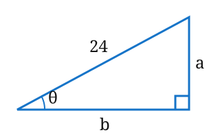
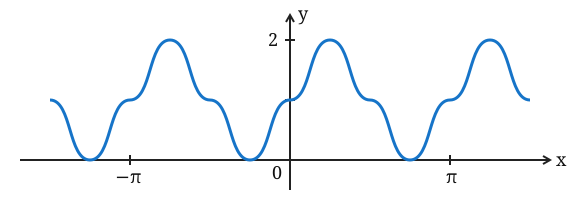

D / Consignas y resolución paso a pasoJames Stewart · Cálculo · Sexta edición
D / Exámenes de diagnóstico
Fuente: James Stewart, Cálculo, sexta
edición, página física 26 del PDF (página impresa xxiv). Las consignas
reproducen el examen; los desarrollos intercalados son de elaboración
docente.
Ejercicio 1
Convierta de grados a radianes.
(a)
(b)
Consultá una resolución
(a) Explicación breve
Como
rad, multiplicamos por
y simplificamos la fracción.
Paso a paso
Una vuelta completa mide
o
rad; por eso
rad. Multiplicamos por una razón equivalente a
,
elegida para cancelar los grados:
Dividimos numerador y denominador por
:
.
Así obtenemos
rad.
(b) Explicación breve
Multiplicamos por
y simplificamos. El signo negativo se conserva porque el factor de
conversión es positivo.
Paso a paso
De
rad obtenemos el factor
,
que equivale a
.
Al multiplicar se cancelan los grados:
Como
,
la fracción se simplifica a
rad. El signo indica que el ángulo se mide en el sentido negativo.
Ejercicio 2
Convierta de radianes a grados.
(a)
(b)
Consultá una resolución
(a) Explicación breve
Como
rad equivalen a
,
multiplicamos por
y simplificamos.
Paso a paso
Usamos
rad
y elegimos el factor que cancela los radianes:
Al cancelar
y calcular
,
queda
.
(b) Explicación breve
El dato es
rad, no
rad. Al multiplicar por
queda una respuesta exacta con
en el denominador.
Paso a paso
Como
rad
,
multiplicamos por una razón equivalente a
y cancelamos los radianes:
No se cancela
porque no aparece en el dato
rad. Como comprobación aproximada,
.
Ejercicio 3
Encuentre la longitud de un arco de círculo con radio de 12 cm si el
arco subtiende un ángulo central de
.
Consultá una resolución
Explicación breve
La longitud del arco es
Convertimos
a
rad y lo multiplicamos por el radio. En
,
el ángulo debe estar en radianes.
Paso a paso
Una vuelta completa tiene longitud
y corresponde a
rad. Por proporcionalidad, un ángulo central de
rad abarca la fracción
de la vuelta, de modo que
.
Convertimos el ángulo antes de usar la fórmula:
Con
cm, sustituimos y simplificamos
:
Como
es un doceavo de vuelta, también obtenemos un doceavo de la
circunferencia
cm.
Ejercicio 4
Encuentre los valores exactos.
(a)
(b)
(c)
Consultá una resolución
(a) Explicación breve
El ángulo es
.
En un triángulo notable, los catetos opuesto y adyacente están en razón
.
Paso a paso
Como
rad
,
tenemos
.
Para obtener las razones exactas, partimos de un triángulo equilátero de
lado
y lo dividimos por una altura. Cada mitad es un triángulo rectángulo con
hipotenusa
,
cateto corto
y cateto largo
,
por Pitágoras.
Respecto de
,
el cateto opuesto es el largo y el adyacente es el corto. Por
definición,
También
,
así que el cociente
está definido.
(b) Explicación breve
El ángulo está en el tercer cuadrante: allí el seno es negativo. Su
ángulo de referencia es
,
cuyo seno es
.
Paso a paso
Es decir, avanzamos
después de
:
el ángulo está en el tercer cuadrante. En la circunferencia unitaria, el
seno es la coordenada vertical, negativa en ese cuadrante. El ángulo de
referencia es
y su seno es
:
en un triángulo
,
el cateto opuesto a
es la mitad de la hipotenusa. Por lo tanto,
(c) Explicación breve
El ángulo está en el cuarto cuadrante, con referencia
y coseno
.
Su recíproco, la secante, es
.
Paso a paso
por lo que el ángulo está en el cuarto cuadrante y su referencia es
.
En la circunferencia unitaria el coseno es la coordenada horizontal,
positiva allí. Por simetría respecto del eje horizontal,
Este valor notable se obtiene con el cateto adyacente a
y la hipotenusa en razón
.
Como el coseno no es cero, podemos tomar su recíproco:
Ejercicio 5
Exprese las longitudes
y
de la figura en términos de
.

Figura para problema 5: triángulo
rectángulo con hipotenusa 24, cateto opuesto a y cateto adyacente b
respecto de theta.
Consultá una resolución
Explicación breve
Respecto del ángulo
,
El seno relaciona el cateto opuesto
con la hipotenusa
;
el coseno relaciona el adyacente
con esa misma hipotenusa. Despejamos cada longitud.
Paso a paso
El cateto opuesto a
mide
,
el adyacente mide
y la hipotenusa mide
.
Por lo tanto:
En cada igualdad multiplicamos ambos miembros por
para despejar el cateto. Como el triángulo rectángulo es no degenerado,
es agudo:
.
En ese intervalo seno y coseno son positivos, como corresponde a las
longitudes
.
Ejercicio 6
Si
y
,
donde
y
están entre
y
,
evalúe
.
Consultá una resolución
Explicación breve
De la secante obtenemos
.
La identidad pitagórica y el primer cuadrante dan
y
;
luego aplicamos la fórmula de suma.
Paso a paso
La secante es el recíproco del coseno. Como
,
se cumple
,
de donde
.
Aplicamos
y despejamos:
Como
está en el primer cuadrante, su seno es positivo, así que
,
no
.
De igual manera, con
,
El coseno también es positivo en el primer cuadrante. Entonces
Ahora,
Sustituyendo:
Ejercicio 7
Demuestre las identidades.
(a)
(b)
Consultá una resolución
(a) Explicación breve
La identidad vale para todo
con
,
pues allí están definidas
y
.
Al expresar la tangente como seno sobre coseno aparece
.
Paso a paso
Para
,
Como
,
podemos escribir
y sumar con denominador común. Luego usamos
y la definición de secante:
Restricción:
(b) Explicación breve
La identidad vale para todo
con
,
es decir,
Se usa
;
al reemplazar tangente y secante por cocientes de seno y coseno queda la
fórmula del seno del doble.
Paso a paso
Para
,
la tangente y la secante están definidas. Además,
se obtiene dividiendo
por
.
Así,
El denominador es positivo, pues
.
Reemplazamos
y
;
dividir por esta última fracción equivale a multiplicar por
:
En el último paso usamos la fórmula del seno del ángulo doble.
En los puntos donde
no está definida, la expresión izquierda tampoco lo está, aunque
sí esté definida; por eso se excluyen del dominio de la identidad.
Ejercicio 8
Encuentre todos los valores de
tales que
y
.
Consultá una resolución
Explicación breve
Las soluciones en el intervalo cerrado
son
La fórmula del ángulo doble permite factorizar en
.
Resolvemos ambos factores sin dividir por
,
para no perder soluciones.
Paso a paso
Usando
:
equivale a
es decir,
Factorizando:
Un producto es cero si y solo si al menos uno de sus factores es
cero. Entonces hay dos casos:
.
En la circunferencia unitaria, la coordenada vertical es cero sobre el
eje horizontal. En
esto ocurre en
.
Sumamos
y dividimos por
:
.
El ángulo de referencia es
;
el coseno es positivo en los cuadrantes primero y cuarto. En el
intervalo pedido, por eso,
Uniendo todas:
Se incluyen
y
porque el intervalo es cerrado, aunque representen el mismo punto de la
circunferencia. Las transformaciones fueron equivalencias y ambos
factores se resolvieron dentro del intervalo, así que la lista contiene
todas las soluciones. Dividir por
habría descartado las del primer caso.
Ejercicio 9
Trace la gráfica de la función
sin usar calculadora.
Consultá una resolución
Explicación breve
La función
es una onda senoidal con amplitud
,
línea media
,
recorrido
y período
El factor
en el argumento hace que el seno complete su ciclo en la mitad de
longitud; el
desplaza la gráfica una unidad hacia arriba.
Paso a paso
Partimos de
,
que tiene amplitud
,
recorrido
y período
.
Aquí
:
para que el argumento aumente
,
debe aumentar
.
Por eso el período es
.
El
traslada cada altura una unidad hacia arriba: la línea media pasa de
a
y el recorrido de
a
.
La amplitud sigue siendo
.
Basta dibujar un ciclo y repetirlo cada
.
Para un ciclo entre
y
,
dividimos el intervalo en cuatro partes de longitud
.
Calculamos primero
,
después su seno y finalmente sumamos
.
Por ejemplo, en
,
y
;
en
,
y
:
Los puntos exactos son:
En los ejes, marcar en
los valores
y en
los valores
.
Ubicar los puntos de la tabla y unirlos con una curva suave: sube hasta
el máximo
,
baja hasta el mínimo
y vuelve a
.
Repetir el mismo patrón cada
hacia ambos lados. Si
cuenta los ciclos, se obtienen:
máximos
en
;
mínimos
en
;
cortes con la línea media
en
.
La gráfica toca el eje
en los mínimos, pero no toma valores negativos.

Gráfica de y igual a 1 más seno de 2x:
amplitud 1, línea media 1 y período pi.